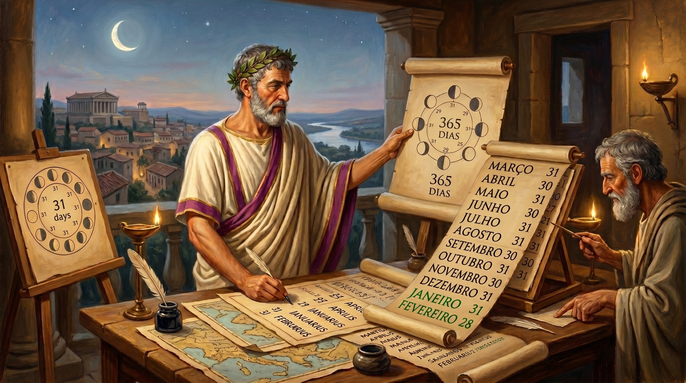
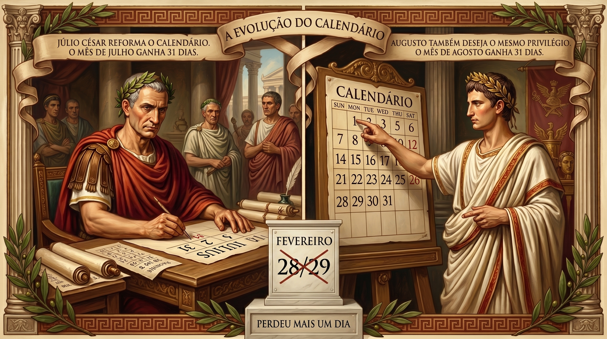
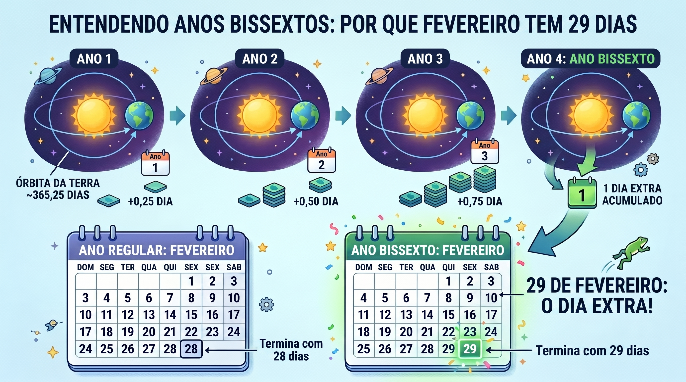

Por que fevereiro tem menos dias?
Fevereiro é o único mês do calendário que parece ter sido "esquecido" na hora de distribuir os dias. Enquanto todos os outros têm 30 ou 31, ele ficou com apenas 28 — ou 29, a cada quatro anos. Essa aparente injustiça tem uma história de mais de 2.700 anos, cheia de vaidade imperial, matemática astronômica e decisões políticas que moldaram o calendário que usamos até hoje.
Neste artigo
1. O calendário romano original: só 10 meses
O calendário que usamos hoje é herdeiro direto do calendário romano — mas o original era bem diferente. Atribuído ao lendário fundador de Roma, Rômulo, por volta do século VIII a.C., esse calendário primitivo tinha apenas 10 meses e um total de 304 dias. O ano começava em março (a primavera do hemisfério norte, época de plantio e guerras) e terminava em dezembro.
Por isso os nomes dos meses de setembro a dezembro fazem sentido em latim: septem (7), octo (8), novem (9) e decem (10) — eles eram literalmente o 7º, 8º, 9º e 10º meses. Hoje são o 9º, 10º, 11º e 12º, porque dois meses foram inseridos antes deles.
dias
2. Numa Pompílio e a chegada de fevereiro

Por volta de 713 a.C., o segundo rei de Roma, Numa Pompílio, decidiu resolver o problema dos dias "perdidos" no inverno. Ele reformou o calendário para alinhálo ao ciclo lunar — aproximadamente 354 dias — e adicionou dois novos meses ao final do ano: januarius (janeiro, em homenagem a Janus, deus das passagens e transições) e februarius (fevereiro, do latim februare, que significa "purificar").
Fevereiro era o último mês do ano romano e era dedicado a rituais de purificação e cerimônias em homenagem aos mortos — a festa Parentalia e os rituais Februa. Era um mês de encerramento, limpeza espiritual e preparação para o novo ano que começava em março.
3. A vaidade de César e Augusto

Em 46 a.C., Júlio César contratou o astrônomo egípcio Sosígenes de Alexandria para criar um novo calendário baseado no ciclo solar — não mais lunar. O resultado foi o calendário juliano, com 365 dias e um dia extra a cada quatro anos. Nessa reforma, o mês de Quintilis (que era o 5º mês quando o ano começava em março) foi renomeado para Iulius — julho — em honra ao próprio César. E ficou com 31 dias.
Após o assassinato de César, seu sobrinho-neto e sucessor Augusto também quis seu lugar no calendário. O mês de Sextilis foi renomeado para Augustus — agosto. Mas havia um problema: julho tinha 31 dias, e agosto tinha apenas 30. Para que seu mês não fosse "inferior" ao de seu antecessor, Augusto adicionou um dia a agosto — tirando esse dia de quem?
4. Como ficou a distribuição dos dias hoje
Veja como os 12 meses estão distribuídos e a origem de cada nome:
5. O ano bissexto: a matemática do universo

A Terra leva exatamente 365 dias, 5 horas, 48 minutos e 46 segundos para completar uma volta ao redor do Sol — o chamado ano tropical. Isso significa que um ano civil de 365 dias fica cerca de 6 horas mais curto que o ano astronômico. Essas horas se acumulam: em 4 anos, somam quase um dia inteiro (23h 15min, para ser preciso).
Para compensar, o calendário juliano de Júlio César introduziu o conceito de ano bissexto: a cada quatro anos, fevereiro ganha um dia extra — o famoso 29 de fevereiro. O nome "bissexto" vem do latim bis sextus, que significa "dois sextos": no calendário romano, o dia extra era inserido antes do sexto dia antes das Calendas de Março (o equivalente ao 24 de fevereiro), criando um dia duplicado chamado "bis sextus dies".
Mas a regra do "a cada 4 anos" não é tão simples assim. O calendário gregoriano, adotado em 1582, usa três regras em cascata:
6. A reforma gregoriana de 1582
O calendário juliano funcionou bem por séculos, mas tinha um pequeno problema: o ano juliano (365,25 dias) é ligeiramente mais longo que o ano solar real (365,2422 dias). Essa diferença de apenas 11 minutos e 14 segundos por ano parece insignificante, mas ao longo de 1.300 anos acumulou 10 dias inteiros de erro.
Em 1582, o Papa Gregório XIII encomendou uma reforma ao astrônomo calabrês Luigi Lilio. A solução foi elegante: além das regras dos anos secular (divisíveis por 100 e 400), o papa ordenou que 10 dias fossem simplesmente apagados do calendário. Quem dormiu na noite de 4 de outubro de 1582 acordou na manhã de 15 de outubro — sem passar pelos dias 5 a 14.
Calendário de Rômulo: 10 meses, 304 dias. O ano começa em março. Inverno não existe no calendário.
Numa Pompílio adiciona janeiro e fevereiro. O calendário passa a ter 12 meses e 355 dias. Fevereiro fica com 28 dias por superstição com números pares.
Júlio César e Sosígenes criam o calendário juliano: 365 dias com ano bissexto a cada 4 anos. Julho ganha 31 dias em honra ao imperador.
Augusto renomeia Sextilis para agosto e adiciona um dia ao mês — retirado de fevereiro. Fevereiro cai para 28 dias definitivamente.
Papa Gregório XIII institui o calendário gregoriano: corrige 10 dias acumulados de erro e refina a regra do ano bissexto com as exceções dos anos seculares (100 e 400).
O calendário gregoriano é o padrão internacional usado por praticamente todos os países. Fevereiro continua com 28 dias (ou 29 nos anos bissextos) — exatamente como Augusto decidiu há mais de 2.000 anos.
7. Perguntas frequentes ❓
🌟 Curiosidade Extra
Em vários países europeus durante a Idade Média, o ano novo não era em 1º de janeiro — cada região tinha sua própria data. A Inglaterra usava 25 de março (Dia da Anunciação) como início do ano até 1752. Portugal usava 1º de janeiro desde 1422 — uma das primeiras nações a fazê-lo. Por isso documentos históricos medievais europeus exigem cuidado: uma carta datada de "fevereiro de 1600" na Inglaterra pode corresponder a "fevereiro de 1601" no calendário moderno, pois o ano inglês só começava em março.
Conclusão
Fevereiro tem 28 dias por uma combinação de superstição romana com números pares, do ego de dois imperadores que queriam meses tão grandiosos quanto julho, e de mais de 2.700 anos de reformas calendáricas tentando encaixar a matemática imperfeita do universo em um sistema prático para a vida humana. Da cada vez que você olha para o calendário e vê fevereiro encurtado, está enxergando a sombra de Rômulo, Numa, César, Augusto e Gregório XIII — todos deixando sua marca no simples ato de contar os dias.
Fontes e referências
- Duncan, David Ewing. Calendar: Humanity's Epic Struggle to Determine a True and Accurate Year. Avon Books, 1998.
- Richards, E.G. Mapping Time: The Calendar and its History. Oxford University Press, 1998.
- Encyclopaedia Britannica — "Calendar"
- History.com — Why Does February Have 28 Days?
- TimeAndDate.com — Leap Year Rules Explained
- Steel, Duncan. Marking Time: The Epic Quest to Invent the Perfect Calendar. Wiley, 2000.